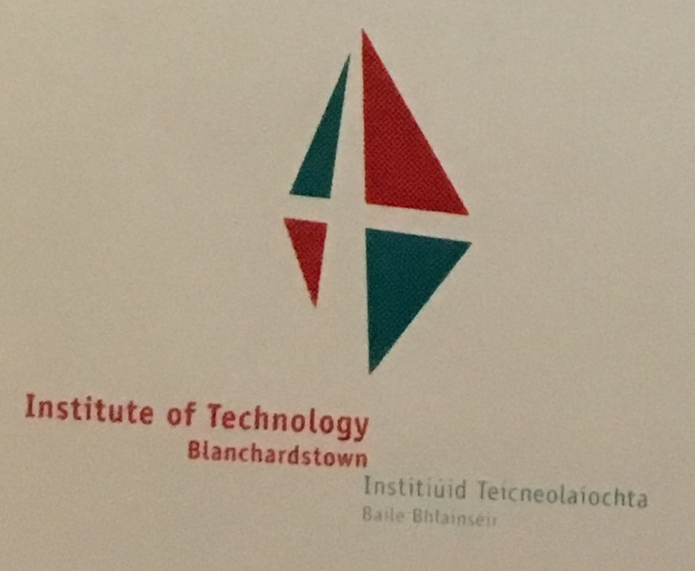

History of ITB
ITB was established in 1999, a third-level institution. In January 2019, it will become TU4Dublin.

That was the ITB logo in 1999. They changed it in 2006, they realised it wasn't the right colour for ITB and decided to change the logo and the colour completely. This was the ITB logo for the past 12 years. They are still thinking of another logo design for TU4Dublin. Having the three Institute in Dublin together as one University.

Before they became ITB, it took them 2 years for this college to become an IT. It took them that long to become an IT because they need to get accepet by The Oireachtas, they finally got accpeted for the Regional Technical Colleges (Amendment) Act in July 1999. This Act puts the Institute of Technology Blanchardstown on the same statutory footing as the twelve other Institutes of Technologies in Ireland already operating under the Regional Technical Colleges Acts 1992 and 1994. The institute also operates under the Qualifications (Education and Training) Act,1999 and the Institutes of Technology Act 2006.
It was supposed to be near the Blanchardstown Shopping Centre or Navan outside of Dublin. The first day of ITB, everywhere you go had wet cement, the first year students and the first staffs was walking around in wet cement. They didn't have Block B, C, D, E, F etc. when it first opened. The only building they have was the A block and that was where the wet cement was. It was a really small college, even the library was there.
In 2012, they start planning to join the IT in Dublin, Blanchardstown and Tallaght and become an university. The first IT to become an university. It took them a while to come up with a name for the university. They were going to called it Dublin Technology University (DTU) but it sounded too similar to Dublin City University (DCU) and decided on a different university name. They didn't want it to sound too similar to the other university in Dublin.
In 1999-2006, there was no digital things which made the advertising harder for ITB. The only advertisments the college could get was from the radio. ITB used to only have a 2 subjects, Department of Business and Department of Engineering. Creative Digital Media was launched in ITB in 2009.